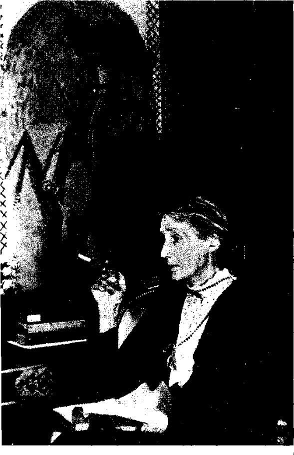

Bölüm 8
Virginia Woolf’un Roman Türünde Yapmak İstediği Değişim
Virginia Woolf’un eleştiri yazılarının belki de en önemlisi olan 1924’te yazdığı “Mr. Bennett ve Mrs. Brown” adlı denemesinde çarpıcı bir söz söyler: “On about December 1910 human nature changed” (Aşağı yukarı Aralık 1910’da insan doğası değişti) der. Tam o tarihte olmasa bile, insan doğası gerçekten bir değişime uğramıştı o sıralarda. Çünkü Victoria Çağı, uzun süre can çekiştikten sonra bitmiş, modern çağ başlamıştı. İngiliz edebiyatında bu modern çağın başlıca öncüleri de Virginia Woolf, James Joyce, T.S.Eliot gibi yazarlardı. Virginia Woolf, hem içerik, hem de biçim açısından bu yeni çağa uygun yepyeni bir roman türü yaratmak gerektiğini biliyordu. Ve ilk iki romanından sonra, yani 1922’den sonra, istediğini yapabildi. Bunu başarabilmek, 1934 tarihli güncesinden de anlaşıldığı gibi, hiç de kolay olmamıştı:
“I have to some extent. forced myself to break every mould and find a fresh form of being, that is of expression, for everything I feel and think... This needs constant effort.”
(Tüm kalıpları kırmaya, duyduğum ve düşündüğüm her şeyi için yeni bir var olma biçimi, yani yeni bir ifade biçimi bulmaya kendimi zorladım... Sürekli bir çaba gerektiriyor bu.)
Virginia Woolf’un yaptığı büyük bir çaba gerektiriyordu elbette. Çünkü amacı, iki yüz yıldır İngiliz romanına egemen olan gerçekçilik geleneğini yıkmaktı. “Mr. Bennett and Mrs. Brown” denemesinde adı geçen Mr. Bennett, bu geleneğin o sıralarda en etkin temilcilerinden Arnold Bennett’tir; Mrs. Brown ise hayali bir kişidir. Arnold Bennett, Virginia Woolf’un 1922’de yayınladığı Jacob’s Room’da, okuyucuların belleğinde kalan kişiler yaratmamakla suçlamıştı onu. Üstelik, bu suçlamadan birkaç yıl önce yazdığı “Our Women” (Bizim Kadınlarımız) adlı denemesinde kadınları aşağılamış; kafalarını geliştirmek ve yaratmak açısından erkekler kadar yetenekli olmamakla suçlamıştı onları. Ama bu “macho” tutumuna karşın, Arnold gerçekçi geleneğe bağlı iyi bir romancıydı. Sanat ve edebiyat alanlarında gerici değildi. Rus yazarlarına hayranlık duyardı; post-empresyonist ressamları överdi. Virginia Woolf ise, Arnold Bennett’i eleştiren başka bir yazısında belirttiği gibi, onun övdüğü post-empresyonistlerin resimde yaptıklarını romanda yapmayı amaçlıyordu.
Virginia Woolf, Arnold Bennett, Galsworthy ya da Wells gibi romancıların gerçekçiliğinin, yaşamın asıl gerçeklerini yansıtmayan, basmakalıp, yapay ve boş bir gelenek olduğuna inanıyordu. Onların olup bitenleri sırayla ele almaları, öğle yemeğinde ne olduğunu, öğle üzeri ne olduğunu, sonra akşam yemeğinde ne olduğunu bir bir “anlatmaları yürekler acısı bir işti” (“this appalling narrative business of the realist -getting on from lunch to dinner”). Virginia Woolf, bu romancıların “işlerine yarayan âletler yaptılar, gelenekler kurdular; ama bu iş bizim işimiz değil, bu gelenekler bizi mahveder, kullandıkları âletler bizim için ölümdür” (“made tools and established conventions which do their business and that business is not our business. For us these conventions are ruin, these tools are death”) diyordu. Onlar, bir tek gerçek olduğunu sanıyorlardı. Oysa gerçek, her insana göre değişen, elle tutulamayan, su gibi akan bir şeydi. Asıl önemli olan, o gün ne yaptığını, şu gün ne yaptığını rapor etmek değil; aklından gelip geçen duygularla düşünceleri, anlık izlenimleri saptamaya çalışmaktı. Gerçek yaşamda, basit kalıplara hiç mi hiç uymayan uçsuz bucaksız bir karmaşa vardı. Hiçbir şeyin kesin bir başlangıcı, bir ortası ve bir sonu yoktu. Oysa bu gerçekçi romancılar, kişilerinin yaşamını başlangıcı, orta kısmı ve sonu olan derli toplu öykülere dönüştürmek istiyorlar; gerçek yaşamı yansıttıklarını sanıyorlardı bunu yaparken. Ama yaşamın asıl gerçeklerine yüz çeviriyorlardı. Çünkü yaşamın asıl gerçekleri “maddesel” (“material”) değil, “ruhsaldı” (spiritual”). Bu gerçekler, dış dünyayla değil, insanın iç dünyasıyla ilişkiliydi. Gerçekçi romancılar ise, dış dünyanın önemsiz ayrıntıları üstünde duruyor, bu ıvır zıvır ayrıntıları büyük bir ustalıkla işliyor; yaşamın ve insanın asıl gerçeğini ele almaktan kaçınıyorlardı böylece. Örneğin, trende karşısında oturan Mrs. Brown adını taktığı kadını bir romanda nasıl ele alması gerektiğini gerçekçilere sorsa, onlar şöyle derlerdi:

İlkin babasının Harrowgate’de bir dükkân işlettiğini yaz; sonra o dükkânda hangi malların satıldığını ve kiranın ne kadar olduğunu sapta. O yıl böyle bir dükkânda çalışanların kaç para kazandıklarını da sapta. Bu kadının annesinin hangi hastalıktan öldüğünü yaz. Eğer kanserden öldüyse, kanserin ne olduğunu anlat, v.b. Oysa, bu sözümona gerçekçi ayrıntıların, Mrs. Brown gerçeğiyle hiçbir ilgisi yoktur. Virginia Woolf, bir insanın dış görünüşüyle iç dünyası arasında pek ilişki olmadığını da bilir. “An Unwritten Novel” adlı öyküsünde, trende karşısında oturan bir kadınla ilgili bir roman üretir kafasında. Bu kadını, evde kalmış yaşlı bir kız, buruk, ezilmiş, mutsuz ve yapayalnız biri sanır. Oysa tren istasyona varınca, kadını oğlu karşılar. Ana oğul hiç de mutsuz görünmeyen bir hava içinde istasyondan uzaklaşırken, daha önce de söylediğimiz gibi yazar onlara karşı büyük bir sevgi duyar.
Sanatını anlamak açısından “Mr. Bennett and Mrs. Brown” kadar önemli olan “Modern Fiction” adlı denemesinde, Virginia Woolf, gerçekçi romancılara meydan okur:
“If a writer were a free man and not a slave; if he could write what he chose, not what he must, if he could base his work upon his own feelings and not upon convention, there would be no plot, no comedy, no tragedy, no love interest.”
(Eğer bir yazar bir köle olmayıp, özgür bir insan olsaydı; yazması bekleneni değil, kendi canının istediğini yazabilseydi; yapıtının temelini herkesçe kabul edilen görüşler üstüne değil, kendi duydukları üstüne kurabilseydi; ne olaylar örgüsü olurdu, ne komedya, ne tragedya, ne de aşk öyküsü.)
Oysa bunlar, yani olaylar örgüsü, güldürücü bölümler, hüzün veren bölümler ve aşk öyküsü, romanların başlıca öğeleri bilinir öteden beri. Virginia Woolf ise, bunların tümünü gereksiz sayar.
Onun gözünde gerçek yaşam, açık seçik görülebilen, düzenle sıralanmış bir dizi lamba değil, “ışıklı bir hâle, yarı saydam bir zarftır” (“a luminous halo, a semi-trasparent envelop”). Romancının amacı da, o ışıklı hâleyi, o yarı saydam zarfı, olanca karmaşıklığıyla gözler önüne serebilmektir. Yaşamı saran bu ışıklı sisten “binlerce izlenim” (“a myriad of impressions”) edinebiliriz. Virginia Woolf, bu binlerce izlenimi mantıklı bir sıraya koyup, düzenlemeye kalkmadan, olduğu gibi okuyucularına yansıtmak ister. Gerçekçi romancılar gibi yaşamın bir fotoğrafını çekmek değildir amacı. Post-empresyonist ressamların resimde yaptıklarını romanda yaparak, elle tutulur olgular değil, izlenimler vermek ister bizlere. Gerçekçi romancılar, bir duygu ya da bir düşünceyi önceden saptayıp, sonra kaleme alırlar. Virginia Woolf ise, kişilerin duyduklarını ya da düşündüklerini, hemen o an ve hiçbir değişime uğratmadan, kendi yorumlarını da eklemeden bize aktarmak; güncesinde dediği gibi, “to give the moment whole; whatever it includes” (içinde ne olursa olsun o an’ı bir bütün olarak vermek) ister. Çünkü insanların gerçek yaşamda, mantıkla düzenlenmiş durumları ve olayları değil, düzensiz olarak birbirini izleyen anları yaşadıklarını bilir. Amacı da o anları kaydederek, insanlar gerçekte nasıl yaşıyorlarsa, romanlarındaki kişileri de öyle yaşatmaktır.
Virginia Woolf, insanların dış dünyasına değil, ancak iç dünyasına ilgi duyduğundan, Mrs. Dalloway, To the Lighthouse, The Waves gibi asıl başarılı romanlarında, “plot” yani olaylar örgüsü yoktur. Kronolojik sırayla anlatılan, başlangıcı, ortası ve sonu olan bir öykü de anlatılmaz: Mrs. Dalloway, hem şimdiki zamanı, hem de geçmişi kapsayan bir tek günde geçer. Clarissa Dalloway, akşam vereceği parti için sokağa çıkıp çiçek alır; eski âşığıyla görüşür; savaş yüzünden ruh hastası olan hiç tanımadığı bir genç kendini öldürür. İşte olup bitenler yalnız bunlardır. To the Lighthouse’da bir ailenin çocukları bir deniz fenerine gitmek isterler ve aradan on yıl geçtikten sonra gidebilirler o deniz fenerine. The Waves’deki tek olay, hiçbir zaman görmediğimiz Percival’ın uzaklarda, Hindistan’da ölmesidir.
Virginia Woolf, büyük sayılan şeyler üstünde değil, küçük sanılan şeyler üstünde durur her zaman. Ele aldığı kişiler de, renkli bir yaşam sürmeyen, çarpıcı yanları olmayan sıradan insanlar görünürler. Ne var ki, onların iç dünyalarına girebildiğimiz için, en heyecanlı serüvenleri yaşayanlardan daha olağanüstü görünürler bizlere. Virginia Woolf, bu kişileri canlandırırken, XIX. yüzyıl gerçekçi romanının başlıca -ve en çok övülen- özelliklerinden biri olan psikolojik yorumları yapmaktan kaçınır; yarattığı kişiler konusunda belirli bir yargıya varmaktan da özenle sakınır. Çünkü ona kalırsa, bir insanı tam olarak derinliğine bilmenin yolu yoktur nasıl olsa. Jacob’s Room’da denildiği gibi, en yakından tanıdığımız insanlar, günün birinde durup dururken öyle bir şey yaparlar, öyle bir şey söylerler ki, onları aslında hiç tanımadığımızı anlayıveririz. To The Lighthouse’da Mrs. Ramsay, kendisine ve çevresindekilere bakınca, “beneath it is all dark... it is unfathomably deep; but now and then we rise to the surface and that is what you see” (altta her şey karanlık... İskandil edilemeyecek kadar derin; ama ara sıra yüzeye çıkarız; gördüğümüz ancak o’dur) diye düşünür.
Virginia Woolf, geleneksel romandan ne denli uzaklaştığını, romanlarında hiçbir toplumsal ya da ahlâksal soruna değinmemek, hiçbir düşünceyi ya da dâvâyı savunmamakla da gösterir. XIX. yüzyıl İngiliz romanında yer alan ekonomik sorunların da hiç yeri yoktur onun yazdıklarında. Hattâ daha önce de belirttiğimiz gibi, feminizm dâvâsına candan bağlı olduğu, bu dâvâyı savunmak için iki kitap yazdığı halde, kadın hakları sorunu üzerine bir romanı yoktur; deneysel bir niteliği bulunmayan, eski tarzda diyebileceğimiz iki üç romanında bile bu dâvâyı ele almaz.
Virginia Woolf’u öteki romancılardan ayıran başka bir özelliği de, özyaşamsal diyebileceğimiz bir tek romanının bulunmamasıdır. Oysa, roman türünün başlangıcından günümüze dek, çoğu romancılar, özellikle ilk kitaplarında kendi yaşamlarından esinlenirler. Virginia Woolf, bundan da kaçınır. A Room of One’s Own’da kadın yazarlara verdiği başlıca öğütlerden biri, içlerini dökmek için değil, bir yazın ürünü yaratmak için yazmalarıdır: (“To use writing as an art, not as a method of self-expression.”)
Virginia Woolf, romanın yalnız içeriğinde değil, tekniğinde de büyük değişiklikler yaptı. Onun romanlarında “görüş açısı” denilen şey yoktur. Olup bitenler, ne her şeyi önceden bilen yazarın kendisi tarafından, ne de modern romanlarda olduğu gibi, yazarın seçtiği ve anlatıcı rolünü üstlenen biri tarafından yorumlanır. Joan Bennett’in dediği gibi, “the writer seems to have vanished, we are no longer aware of a mind directing our judgement” (yazar, ortadan yok olmuştur sanki. Yargılarımızı yöneten bir dimağın varlığını artık hissetmeyiz). Virginia Woolf, kişilerinin iç dünyasını, kendi yorumuyla, ya da romandaki birinin yorumuyla değil, kişilerin içinde olup bitenleri aktarmak yoluyla, doğrudan doğruya verir bizlere. Bunu yapabilmek için de bilinç akımını kullanır. Ne var ki, onun bu yöntemi kullanışı, James Joyce’un aynı yöntemi kullanışından farklıdır. Joyce gibi, kişilerinin aklından geçen her şeyi -önemli ya da önemsiz, mantıklı ya da mantıksız- bizlere aktarmaz. Bilinç akımını süzüp ayıklar, bazı şeyleri seçer, bazılarını ele almaz. Kişilerinin iç dünyasına o an ışık tutan, ancak anlamlı düşünceleri ve duyguları iletir bizlere. Bütün bunlardan ötürü, Virginia Woolf’un yazdıkları geleneksel roman kavramından öylesine uzaktır ki, bunlar gerçekten roman mıdır diye düşünenler olmuştur belki de. Böyle düşünenlerin hakkı da vardır. Çünkü bildiğimiz kadarıyla ömründe şiir yazmayan Virginia Woolf’un romanları, romandan fazla şiire benzer. E.M.Forster bunu hemen anlamış, “she is a poet who wants to write something as near to a novel as possible” (elinden geldiğince romana yakın bir şey yazmak isteyen bir şairdir o) demişti. Virginia Woolf’un İngiliz edebiyatına en büyük katkısı da, romanla şiiri birleştirmesidir bize kalırsa. Ama ister şiir biçiminde olsun, ister düzyazı biçiminde, şiir yazmak kolay değildir. Virginia Woolf, belirli bir olaylar örgünü işlemeden, belirli bir insanın portresini çizip kişiliğini anlatmadan, belirli bir düşünceyi savunmadan; salt yaşanılan anları yansıtarak şiir yazarcasına roman yazdığı için, büyük zorluklar çekiyordu. Güncesi bu konuda yakınmalarla doludur: “I am learning my craft in the most fierce conditions... Reading Flaubert’s letters I hear my own voice... few people can be so tortured by writing as I am.” (Sanatımı son derece vahşi koşullar altında öğreniyorum... Flaubert’in mektuplarını okurken, kendi sesimi duyar gibiyim... Yazmak, bana işkence ettiği kadar hiç kimseye işkence edemez) diyordu. “Oh, I am so tired of correcting my own writing” (Ah, kendi yazdıklarımı düzeltmekten öyle bıktım ki!) diyordu. Özellikle bir kitabını bitireceği sırada, delirmeye yakın bir gerginlik yaşıyordu. Kitap yayınlandıktan sonra da, olumsuz karşılanacağı paniğine kapılıyordu. “Is the time coming when I can endure to read my own writing in print without blushing, shivering and wishing to take cover?” (Yüzüm kızarmadan, ürpermeden, saklanmak istemeden, kendi yazdıklarımı basılmış olarak görmeye dayanabileceğim zaman gelecek mi?) diye soruyordu kendi kendine. Ama bir yandan bunca acı çekerken, bir yandan da yoğun bir sevinç duymaktaydı: “I walk making up phrases; sit, contriving scenes; I am in short in the thick of the greatest rapture known to me.” (Yürürken tümceler kuruyorum; otururken sahneler düzenliyorum; sözün kısası bilip bileceğim en coşkulu sevinçler içindeyim). Yazmadan yaşayabilmesinin ise yolu yoktu. Çünkü ancak yazarak benliğinin paramparça olmasını, sürekli delirmesini engelleyebiliyordu: “The synthesis of my being... only writing composes it... Nothing makes a whole unless I am writing... Nothing is real unless I write” (Benliğimin bileşimi ancak yazmakla düzenlenebiliyor... Yazmazsam, hiçbir şey bir bütün oluşturamıyor... Yazmazsam hiçbir şey gerçek değil) diyordu güncesinde.